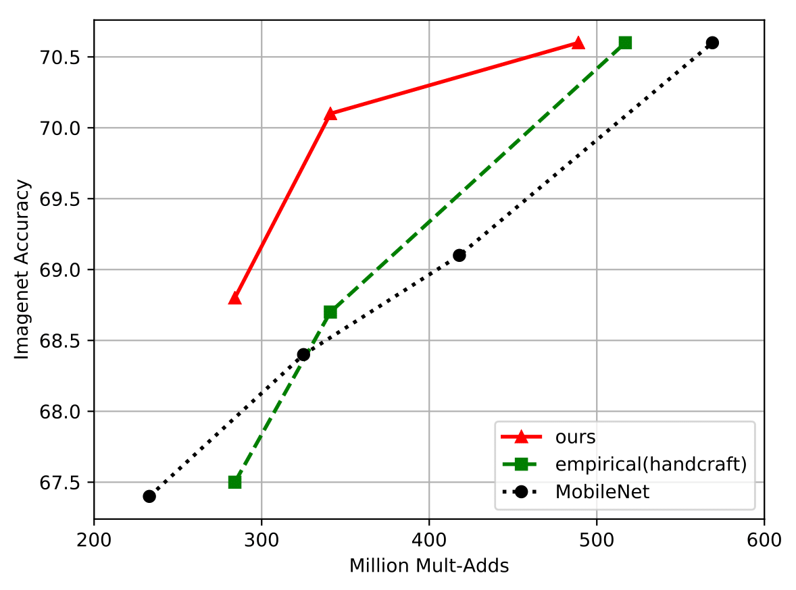

I'm an Applied Mathematics undergrad from Wuhan University, with my interest focus on Data Science, Computer Vision, Deep Learning and Convex Optimization.
Currently, I'm a research assistant with Xiaoping Zhang at WHU, and a R&D engineer intern at Farsee2 .
Currently applying for Ph.D. Also open to one-year research position. If you're interested, don’t hesitate to contact me. Here's my CV.

Developing a Long Short-Term Memory (LSTM) based Model for Predicting Water Table Depth in Agricultural Areas
Jianfeng Zhang, Yan Zhu, Xiaoping Zhang, Ming Ye, Jinzhong Yang, Journal of Hydrology
[paper]
[code]
Predicting water table depth over the long-term in agricultural areas presents great challenges because these areas have complex and heterogeneous hydrogeological characteristics, boundary conditions, and human activities; also, nonlinear interactions occur among these factors. Therefore, we developed a new time series model based on Long Short-Term Memory (LSTM) in this study as an alternative to computationally expensive physical models.In this study, the proposed model was applied and evaluated in five sub-areas of Hetao Irrigation District in arid northwestern China using data of 14 years (2000-2013). 14 years of data are separated into two sets: training set (2000-2011) and validation set (2012-2013) in the experiment. The proposed model achieves higher R2 scores (0.789-0.952) in water table depth prediction, when compared with the results of traditional feed-forward neural network (FFNN), which only reaches relatively low R2 scores (0.004-0.495). Furthermore, we discussed the validity of the dropout method and the proposed model’s architecture. Through experimentation, the results show that the proposed model’s architecture is reasonable and can contribute to a strong learning ability on time series data.


modified from © Yangqing Jia 2013